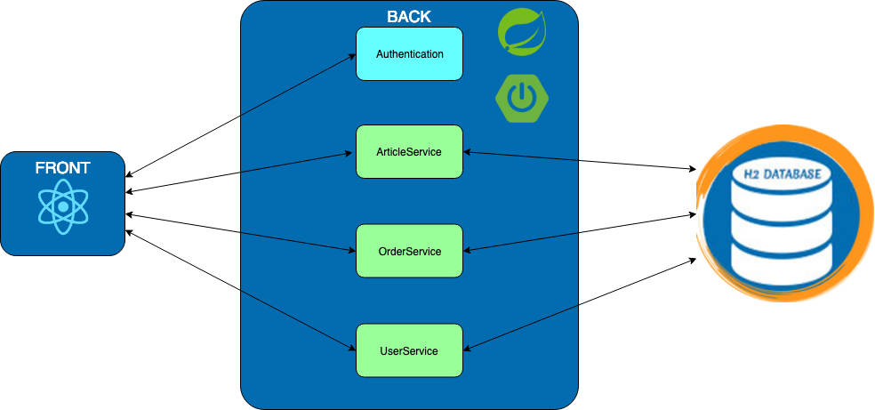

Exercise 0 : The Monolith
Fruit Market Place
Our application is a fruit market place. You can select any items from a list of ten fruits and put them in your cart. You can access your cart and pay for your order. Some stats are computed to let you know what is the average prize of your cart. We implemented a tracking service for your user: we are saving the login and logout action of any users.
Architecture
The monolith is pretty simple. We want to avoid any confusion with a complicated application. The schema below explains the monolith architecture and what composed it.

The application is using SpringBoot with Spring Data JPA and Spring Security for the back. The database is a h2 and the front is implemented in React.
You won't need to interact with the front. It's already implemented for each exercise in this HandsOn. You will only play with the back. Keep in mind that you will need to recompile the front everytime you fetch a new exercise via the following command but no worries, we will put some reminders:
mvn clean install
Steps:
-
Start the monolith
To run your monolith, clone the repository via the following command:
git clone https://github.com/homics/handson.gitBuild your project:
mvn clean installThis will compute your front and back into a single application.
Start your application (if you are using an IDE such as IntelliJ, you can run the application through it) :
mvn spring-boot:run -pl monolith -
Access the application
Go to localhost:8080 and log with admin/admin. You should be able to navigate on the application:

To access the
h2console, after logging as admin, go to : localhost:8080/console and use the credentials: admin/admin.